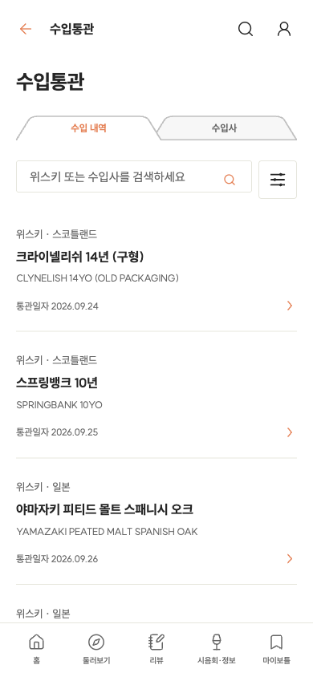
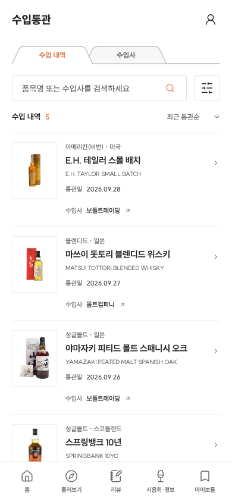
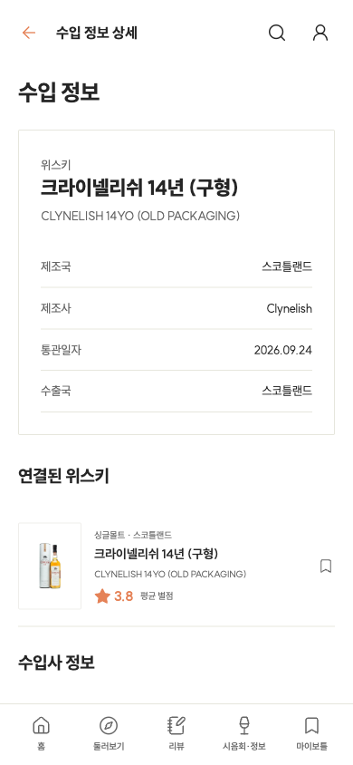

<!doctype html><html lang="ko"><meta charset="utf-8"><title>수입통관 개선 비교</title><style>body{margin:0;background:#ebe9e4;font:14px sans-serif;width:808px}section{padding:12px 8px 16px}h2{font-size:18px;margin:0 0 12px}.pair{display:flex;gap:12px}.pair>div{width:390px}.pair p{margin:0 0 8px}img{display:block;width:390px;height:844px}</style><section id="imports"><h2>수입 내역 — 통관일, 품목, 수입사를 가까이</h2><div class="pair"><div><p>이전</p></div><div><p>수정</p></div></div></section><section id="detail"><h2>상세 — 통관 정보, 수입사, 연결된 위스키</h2><div class="pair"><div><p>이전</p></div><div><p>수정</p></div></div></section></html>
